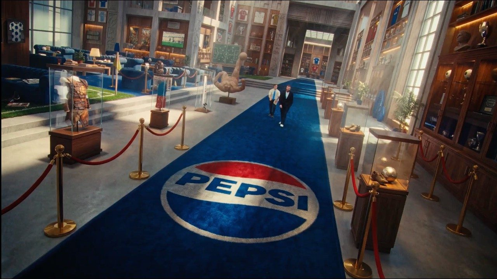

案例发生了什么

2026 年 4 月 20 日，百事从伦敦发布多年期全球足球平台 Pepsi Football Nation。主片不是赛事赞助声明，而是一段“把足球规则交还给球迷”的喜剧式宣言：大卫·贝克汉姆开场把一本规则手册递给球迷，随后 Mohamed Salah、Vini Jr.、Lauren James、Alexia Putellas 与 Florian Wirtz 进入一个虚构的 Football Nation；名厨 Gordon Ramsay 也以客串角色出现。
影片用一组具体、夸张的生活场景解释这个“国度”如何运作。Wirtz 完成一次精准的“极速停车”，裁判还要借 VAR 检查；Lauren James 在大学课堂里讲解如何破解越位陷阱；Vini Jr.、Putellas 与 Salah 则成为虚构大片的主角。品牌把球迷熟悉的日常习惯编号为规则，例如“迷信是神圣的”“技巧为王”“穿着赢球球衣去上班”“一切在球场上解决”，传播核心由此从比赛输赢转向球迷在九十分钟之外仍不断重复的仪式、争论与身份表达。
整套传播并不止一支长片。主片与短切片在 X、Instagram、Facebook、TikTok 和 YouTube 分发；Reddit 激活邀请球迷提交自己的规则和仪式；浏览器扩展则把网页里的“soccer”在本地替换为“football”。百事并非 2026 世界杯官方赞助商，因此它没有复制 FIFA 的赛事权威，而是用球星、喜剧叙事、平台共创和一个可安装的小工具，争夺“谁有资格定义日常足球文化”。
动作顺序：由贝克汉姆把规则手册交给球迷，六位现役与传奇球星在夸张生活场景中演示由球迷定义的足球规则；把主片拆到 X、Instagram、Facebook、TikTok 和 YouTube，并在 Reddit 征集球迷自己的规则与仪式；推出浏览器扩展，在用户本地网页中把“soccer”替换为“football”，让文化立场变成一个可以实际使用的工具。
营销启发卡
用三张卡片保留最值得记住、讨论和迁移的部分。 卡片底部按主题连接全站相关案例、经典方法与深度文章。
由贝克汉姆把规则手册交给球迷
由贝克汉姆把规则手册交给球迷，六位现役与传奇球星在夸张生活场景中演示由球迷定义的足球规则；把主片拆到 X、Instagram、Facebook、TikTok 和 YouTube，并在 Reddit 征集球迷自己的规则与仪式。
六位球星、球迷规则、Reddit 征集与浏览器工具共同搭建 Foot…
以“非官方足球文化平台 / 球星内容 / 球迷共创”为资源起点，进入官方赛事资产、品牌内容、产品/服务、零售或会员触点；结果优先观察权益可见度、用户参与、产品/服务使用与商业转化的分层变化，不把曝光直接等同于销售。
非官方品牌不必模仿官方赞助商的赛事权威
非官方品牌不必模仿官方赞助商的赛事权威；它可以先选定自己长期服务的足球文化，再用明星内容、用户共创和实用小工具形成跨平台的参与系统。
适用条件、风险与证据
- 需要明确权益能被调用的范围，而不是只记录赞助级别。
- 至少准备内容与商业两条承接线，防止资源只在比赛画面里出现。
- 复盘时区分赛事可见度、用户参与和实际业务结果，不能相互替代。
官方资料、结果数据与下一步
已验证事实
- PepsiCo 官方新闻稿确认 Football Nation 于 2026 年 4 月 20 日发布，并定位为多年期全球平台，而非一次性世界杯广告片。
- 官方阵容为 David Beckham、Mohamed Salah、Vini Jr.、Lauren James、Alexia Putellas、Florian Wirtz，Gordon Ramsay 客串；页面不再使用 Soccer Deserves 的错误图片代替本案。
- 官方材料明确列出影片场景、球迷规则、Reddit 激活、浏览器扩展，以及 X、Instagram、Facebook、TikTok、YouTube 的内容分发。
可追溯的结果
- 官方发布能够验证人物、创意剧情、平台机制与投放渠道，但未披露统一的去重触达、完整观看、浏览器扩展安装量、Reddit 参与量、品牌提升或销售变化。
原始来源
来源链接优先指向品牌、权利方或持权媒体官方页面；品牌自述数据按原始定义记录，不视作独立审计结果。